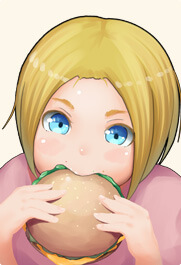

*** написал(а): По-моему, смысл – это такое же чувство, то оно есть, то его нет. Поэтому, оно тоже может быть инструментом неоргаников. Например, оказался в их мире, и всё наполнилось смыслом, тогда зачем возвращаться? В повседневной жизни, бывает, наступает скукота, вот где начинается настоящая практика (безупречность), действовать без смысла, через «пустоту».
1. "Проблемка", с данным ходом мыслей, только в том, что "реальный повседневный Мир" - это и есть самый настоящий Мир неоргаников. Просто мы являемся его "потребителями", а они "обслуживающим персоналом" "компании-изготовителя". У этого факта есть несколько интересных следствий. Но главное - это то, что чтобы не быть инструментом неоргаников, нужно их самих использовать как инструмент, четко понимая их роль и функцию в "настройке собственного восприятия", равно как и в здании той "объективной повседневной реальности", которая имеется у любого общества себе подобных. Роль, без которой ни "чувственное восприятие", ни "социальный договор" не были бы последовательно возможными в принципе.
2. Но смысл - как явление, является более "универсальным" и "абстрактным", чем неорганики, как явление. Если брать именно понятные и подразумеваемые нами "формы" "подобных нам" существ, только не имеющих физического тела в этом мире. Пока, кстати, не имеющих. Это к слову. Поскольку один из основополагающих "энергетических фактов" Реального Мира, может быть высказан как "Нет действующего без Цели", то есть без Намерения, предпосылаемого этому "действию", каким бы оно ни было, или ни казалось нам "слепым природным", "случайным", "неосознанным" и так далее. Поскольку в Реале нет времени, точнее оно есть, только происходит все "здесь и сейчас" сразу и одновременно (для простоты можно представить себе модель, в которой время является "простым" пространственным измерением, наподобие 3 других, что, собственно, и сделали физики уже давно "с подачи Эйнштейна"), то и понятие "Цели и Намерения" в Нем не означает привычных нам по "сну разума" этого мира форм, при которых строго выражено различие между "хотелками" и "имелками", то есть между "желаемым" и "возможным на самом деле". Это часть "игровой формы", которая лежит в основе этого мира как эволюционного явления, и у нее нет "собственной" реальности. То есть эта конструкция существует только у нас в головах.
3. В Реальном Мире Цель - это "праобразный" вид функции, производящей в будущем данную "цепочку событий", от начала и до конца (т.е. до момента наблюдения здесь и сейчас) на том уровне сознания, на котором находится человек, перед сознанием которого данная цель открывается здесь и сейчас в результате того, что определенный объем целостности в некоторой цепочке происходивших с ним непосредственно самим событий реального мира на данный момент может быть обобщен несократимым образом в той конкретной мере и качестве, в котором ему открывается имевшаяся между этими событиями, скрытая в прошлом от него самого непреодолимым "барьером времени" и уровней сознания, сущностная взаимосвязь и единонаправленность происхождения, которая не является конструкцией разума и логики, и поэтому не обладает качествами, которыми обладают они: множественности собственных составляющих элементов, связанных между собой произвольным образом, который может оказаться "истинным" или "ложным", в зависимости от обстоятельств, поскольку является результатом и продуктом накопленного человеком, производящим данное "связывание", практического опыта в соответствующей предметной области, полученного им образования, состояния сознания, здоровья и настроения, и т.д. и т.п.
4. Но Цель в Реальном Мире - это то, что открывается "видящему", когда несколько, казавшихся абсолютно разрозненными и ничем не связанными сущностно ему самому раньше (и действительно таковыми являвшихся) событий, явлений и феноменов его чувственного восприятия, посредством процесса повышения Духом "здесь и сейчас" уровня его собственного осознания их реальности (т.е. не просто сдвига ТС, а ее сдвига "вглубь кокона", как сказал бы КК), соединяются в "безмолвное знания" порядка вещей, который не является продуктом ума, и который не опосредуется намерением, желанием, отношением или мнением человека к данным событиям или явлениям, но опосредует их, поскольку посредством них, а также посредством выполненного их "перепросмотра" воином, таковой "порядок вещей", существующий имманентно во Вселенной Эманаций Орла, Которая, как известно, состоит "из Времени", также, как "этот повседневный Мир" состоит из "элементарных частиц", получил "дополнительную формальную копию" самого себя, которая может быть в дальнейшем использована для управляемой настройки восприятия "сновидения наяву", в котором данная Цель сможет быть ощущаемо (т.е. чувственно) достигнута, включая все свои следствия в виде повышения общего "качества осознания", которое, как известно из КК, является "пищей Орла" (правда, гастрономические "коннотации" я бы оставил в стороне, это уводит от сути и путает, не принося никакой пользы при этом для трезвости и понимания), или, просто-напросто, является той "полезной работой", которую выполняют все "светящиеся коконы", "точки сборки" которых когда-либо были, есть или будут задействованы Орлом в "чувственном восприятии" человеком того или иного "этого Мира" в том или ином пространстве-времени, определяющих особенности происхождения это восприятия с теми, кто "трудится на плантациях" Орла над Его "главным онтогастрономическим проектом"...